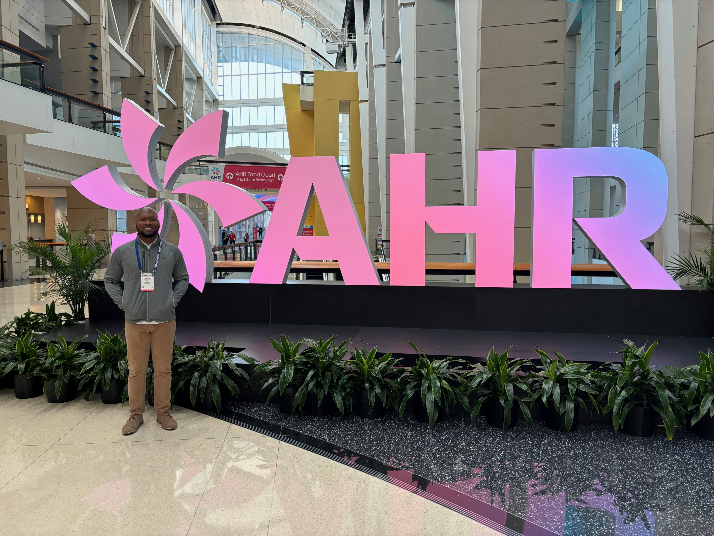

Shaun Wilkins

Summary
Strategic and analytical professional with a strong track record of solving complex problems, building collaborative relationships, and driving results across diverse environments.
Education
- Bachelor of Arts , Sociology - Wiley College (2013-2016)
Work Experience
- Buyer I - TAS Energy
January 2023 - Present
- Managed strategic sourcing efforts for engineered-to-order projects, achieving optimal balance between cost, quality, and delivery timelines in an MRP-driven environment.
- Administered $50 million in annual spend across various commodities and services, ensuring compliance with contractual requirements and corporate objectives.
- Collaborated with engineering and corporate functions to implement cost-saving initiatives and streamline procurement processes.
- Enhanced supply chain resilience by developing risk mitigation strategies and conducting supplier capability gap analyses
Skills
- Analytical & Strategic Thinking
- Collaboration & Relationship Building
- Problem-Solving & Decision-Making
- Adaptability & Learning Agility
Other
© Shaun Wilkins. All rights reserved.